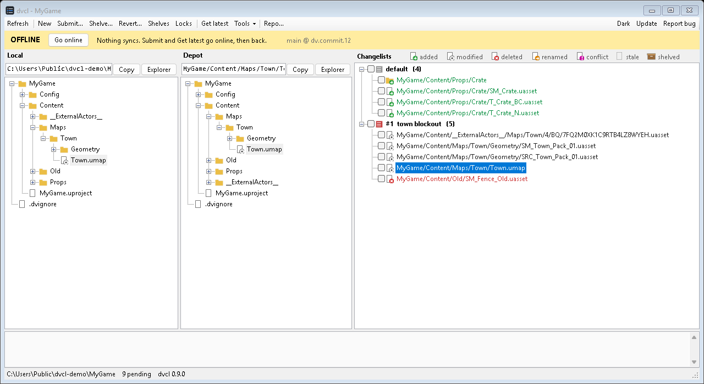

dvcl
Changelists for Diversion.

- Numbered changelists: group pending files, submit, shelve, revert.
- Shelves: Diversion shelves are shared with your team; local shelves stay on your PC.
- Offline: nothing syncs. Submit and Get latest go online, then back.
- Local and Depot trees, state icons, path bars. Drop a file on a tree to find it.
- Command line:
dvcl help.
Windows + Diversion dv CLI. Unzip, run install.cmd.